Does More Money Mean More Success?
By Matias Alves-Nory | March 24, 2023

I love this time of year for one big reason: Major League Soccer starts up again. As someone who has been a big fan of the league for over a decade, it’s been amazing to see how much the league has evolved over the years. We have seen the league grow from 13 teams in 2007 all the way to 29 teams now. The quality of players in the league has also changed overtime with World Cup winners like Thierry Henry and Thiago Almada, UEFA Champions League winners like Frank Lampard and Steven Gerrard, and even a Ballon d’Or winner in Kaka all spending time in the league (Hopefully Messi will be added to this list very soon).
With this expansion comes the expected consequence that more money is put into the league. The money that the league and teams invest in players’ salaries has skyrocketed, as shown by the graph below. Apart from 2020 where bringing in foreign talent became incredibly difficult due to COVID-19, the average wages a team pays has continued to rise.
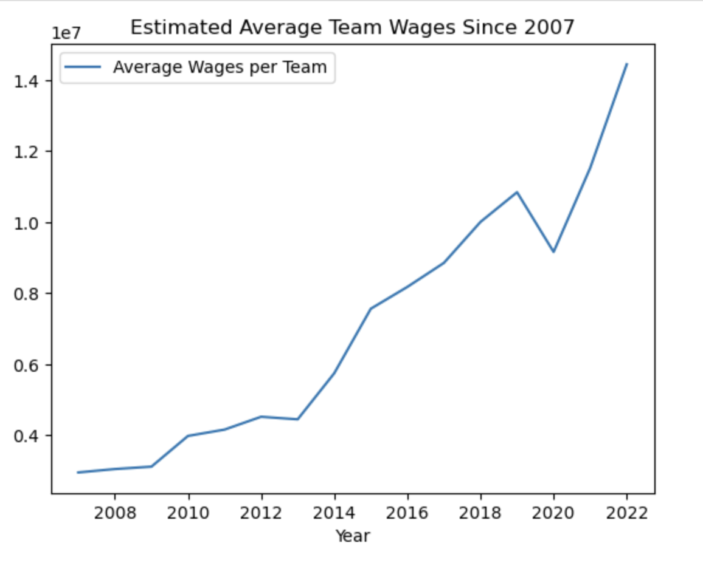Like in any other league, there is a belief that for a team to be successful, you must spend a lot of money on talented players, and it’s not completely inaccurate. In 2011, LA Galaxy had the highest annual wages in the league and won both the Supporter’s Shield (the trophy for accumulating the most points over the season) and the MLS Cup (the trophy for winning the post season tournament). In 2017, Toronto FC did the same thing. In the last 16 seasons, 11 MLS Cup winners and 8 Supporter’s Shield winners were in the top 50% for total wages paid.
However, that also means that there were 5 MLS Cup winners and 8 Supporter’s Shield winners who were outside the top 50% for total wages paid during their respective season. Why were these teams successful and, more importantly, how did these teams win trophies with such a low budget? This question led me to want to investigate deeper how teams who spent the most money and teams who spent the least money performed and whether their performance was a good reflection of the money they spent. I’m particularly interested in seeing which teams are most effective in how they spend their money.
Every year, the Major League Players’ Association releases a report of the salaries of every player in the league. I will determine if a team’s season was a SUCCESS or FAILURE using this report and their points accumulated during the season. If they are ranked higher in points accumulated than total annual salary, I will deem their season as a success. 28 teams participated in the 2022 MLS season. In real life, there are tiebreakers such as wins, goals scored, goals against, etc. that I do not feel reflect what I am going for. So for simplicity, I will say that if multiple teams have the same amount of points, then they are all in the same position.
This assumption leaves me with 28 unique salary totals and 19 unique point totals. As these two categories have a different amount of positions, I cannot simply directly compare a team’s position in these categories. Instead, I will calculate a team’s percentage position in the two categories using the equation:
Category Position % = Position in Category / Total # of Positions in Category
then inputting the results into the equation:
% Difference = Salary Position % - Points Position %
and if the team’s % difference is positive (meaning the team’s points position % is smaller than the team’s salary position %), then I will say that team had a successful season. In the scatter plot below, teams in the bottom left will have the best points position % and the best salary position %.
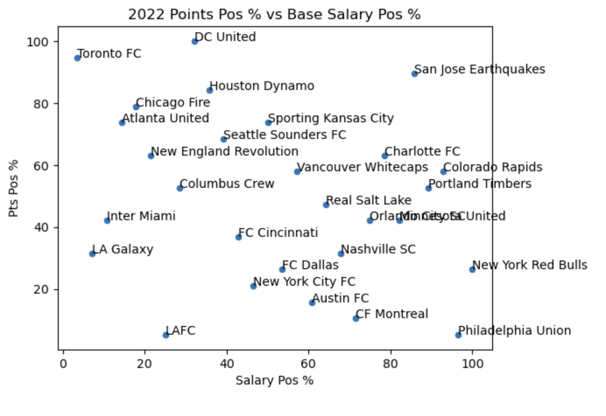As you can see, there is a huge cluster of teams who paid about the league average in salaries and scored about the league average in points. I decided that I would get a better understanding of the relationship between money spent and performance by looking at the extremes. I focused on the three teams who finished with the most points and least points and the three teams who paid the most money in salaries and least money in salaries.
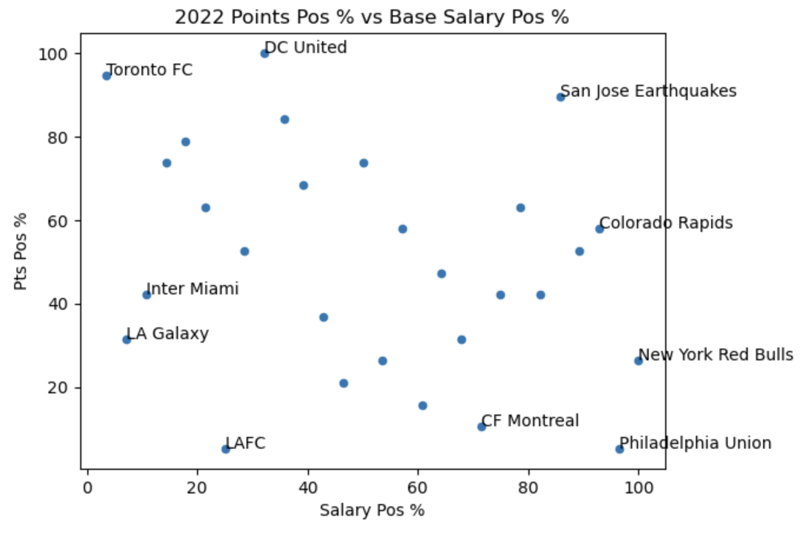Best Point Teams

LAFC and Philadelphia Union both ended the 2022 MLS season with 67 points, the most in the league (LAFC ended up winning the Supporter’s Shield by having more wins). As the graph shows, LAFC spent more money than Philadelphia Union. The MLS Cup winning LAFC spent $16,776,743 on salaries (7th most in MLS) while the Philadelphia Union only spent $9,199,354 on salaries (27th most in MLS). Yep that’s right! Philadelphia tied for the most points in the league whilst having the second lowest base salary position. This is incredibly impressive and they deserve all the applause. As shown both in the graph and in the table below, both LAFC’s and Philadelphia Union’s percentage differences are positive and Philadelphia even has the highest percentage difference in the entire league, meaning that they made the most of the money they spent more than the other teams in the league.
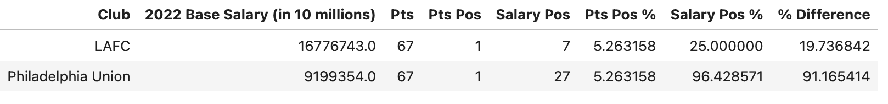So my conclusion is that LAFC and Philadelphia can each rule their season as a SUCCESS.
CF Montreal (RIP Impact) finished just below Philadelphia and LAFC accumulating 65 points throughout the season. CF Montreal spent $11,304,699 on their players’ salaries (20th most in MLS), which is more than Philadelphia but less than LAFC. I had no expectations for Montreal going into the season and I had completely forgotten they had done this well until I looked back at the league table for this article. While CF Montreal ended their season with no trophies, with them not even winning the Canadian Championship, by my measures, their season was still a SUCCESS with their percentage difference being 60 which is incredibly impressive. Bon travail Montréal!
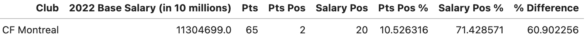Worst Points Teams
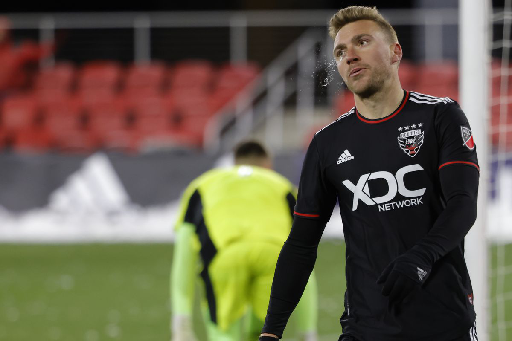The San Jose Earthquakes ended the 2022 MLS season with 35 points accumulated throughout the season (17th most points in league). Cheer up Earthquakes fans! While this may have been a difficult season to watch, you’ll be happy to know that your team only spent $9,873,732 on player salaries (24th most in the league) so the future looks bright. Unfortunately, per the rules I stated at the beginning, I have to rule this season as a FAILURE since their percentage difference is negative. Barely negative, but still, negative. This one seems a bit harsh to me but rules are rules. Hopefully the 2x MLS champs will bounce back.
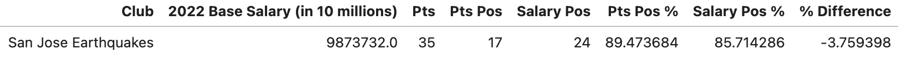The 4x MLS Cup champion DC United ended the 2022 MLS season with just 27 points, the lowest number of points in the league (aka 19th most in the league). They spent a total of $15,512,927 on players’ salaries (9th most in the league). I remember the expectations for DC United were so high at the beginning of the season and nothing ended up coming from it. I will officially rule this season as a FAILURE since their percentage difference is negative. It’s the second worst percentage difference in the league, which kind of shows how much of a disappointment this season was. They brought Wayne Rooney in to be the manager halfway through the season so let’s see what happens in his first full season.
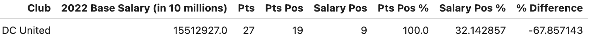Highest Paying Teams
Ah here we are. I will next be looking at Toronto FC’s 2022 season. Like Philadelphia, they were in the top three in two different categories. Unlike Philadelphia, this is not a good thing. Toronto FC spent $28,228,402 on salaries, the most in the league while only accumulating 34 points during the season (18th best). They spent the most money on salaries in the league by far with over $6,000,000 separating them from any other team. They spent all that money...to finish with the second least amount of points. They had the worst percentage difference in the entire league. In their defense, there wasn’t much they could do when a bunch of their players had long term injuries throughout the season. Additionally, their two most expensive players, Lorenzo Insigne and Federico Bernardeschi, did not arrive until halfway through the season. Here’s to hoping that the 2017 MLS Cup champions will be able to rebound from this season that I definitely rule as a FAILURE.
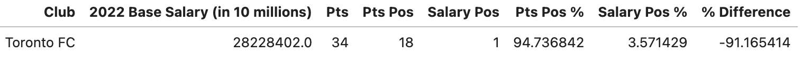The LA Galaxy had a pretty interesting season and this is reflected in their positions in these categories. They spent $21,983,737 on salaries (2nd most in league) and accumulated 50 points (tied for 6th most in league). From how they were looking at the beginning of the season, it’s impressive that the 5x MLS Cup champs finished with the 6th most points in the league. While the second half of the season was very impressive (shoutout to Riqui Puig), their slow start caused their season to be a FAILURE. That salary position percentage is far too low compared to the points position percentage. But with a full season of Riqui Puig (my fantasy captain) and a bunch of new additions, the Galaxy should take a step forward this season.
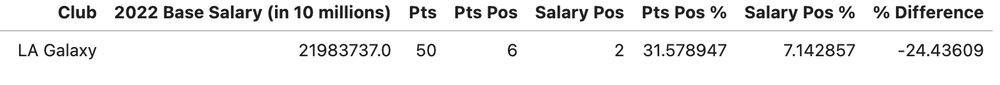David Beckham’s team Inter Miami will be examined next. They spent $21,269,488 on players’ salaries (3rd most in the league) and accumulated 48 points (8th most in the league). This team has been fun to watch since they joined the league in 2020 and it’s a shame they haven’t had a great season yet. I’m sure David Beckham will lead this team to success eventually. They are rumored to be in the lead to sign Lionel Messi in summer, so hey, that’s something. But for now, Inter Miami are hoping to recover from a FAILURE of a 2022 season.
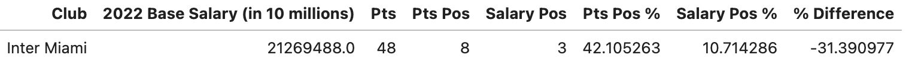Lowest Paying Teams
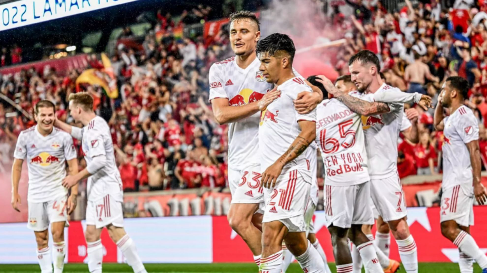The Colorado Rapids have been a staple in the league and a lot of their recent performances have been far from impressive. However, let’s not take away from the 2022 season they had. They ended the season with 43 points (11th most in MLS) and only spent $9,744,476 on salaries (26th most in MLS). My method for determining a successful season gives the 2010 MLS Cup champions the recognition they otherwise would not have gotten. They did not even make it to the MLS Cup playoffs but with the little amount of money they spent, they should not have been expected to. It’s safe to say that this season was an absolute SUCCESS.
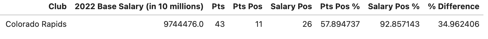Finally, we will be looking at the New York Red Bulls. Outside of Philadelphia Union, the Red Bulls in my eyes had the most impressive season. They only spent $8,664,684 on salaries, the least in the entire league and finished the year with 53 points (5th most in the league). They are a prime example that you don’t need to spend a lot of money to be successful. Their percentage difference was the second highest in the league meaning they absolutely surpassed all expectations. If they continue this trend, I’m sure they will win an MLS Cup soon. Bravo Red Bulls on the SUCCESS of a season.
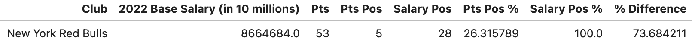As this article showed, just because a team spends a lot of money does not mean that the team will be successful right away and just because a team doesn’t spend a lot of money does not mean that they won’t be successful. In a sport like soccer, there are plenty of other factors that come into play such as injuries to star players, players leaving to join other teams, or an underperforming coaching staff. To the teams who I deemed had a successful season, keep up the good work. To the teams who I deemed had a failure of a season, you’ll get up next time. I am so excited to see how this MLS season turns out and I can’t wait to see which teams will overperform and which teams will underperform relative to their salaries.